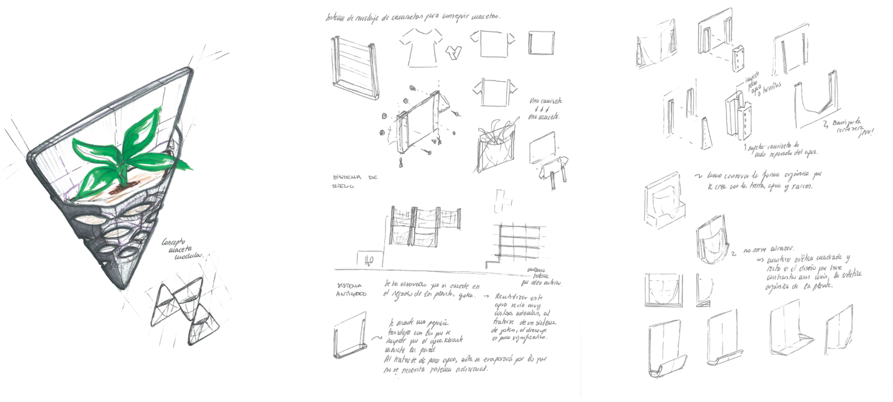

TreeD
WHEN? Fall 2017 || Spring 2020
WHO? Lara Monteagudo, Tomás Cabezón
WHY? Design Workshop I || Personal Project
WHERE? TU Madrid
This project became a challenge quite early on. We were asked to design a simple modular flower pot that could be installed in a balcony, preferably that could be economical. It seems quite simple, but this was one of the first designs I had to work on as designers so the distinct concepts were a bit chaotic and it felt quite overwhelming at first.
Despite this, Lara and I soon realized of two fundamental things, first we wanted to implement 3D printing and make the product as minimal as possible, allowing the user to establish a different type of relationship with the plants, secondly, the importance of forming synergies between the team members to obtain the best possible result. Lara heavily focused on the concept and idea, in a city so polluted like Madrid reclaiming green spaces and air quality seemed essential, meanwhile, I focused more on creating an attractive aesthetic and physical prototype. After many years and not being in class together we decided in winter 2019 to reenvision TreeD to see how we could improve the concept to give it a bit more life.
The initial project of 2017.
Recycling a T-shirt is a fundamental pilar on the project.

Sketches of 2017.
For first drawing we focused on modularity, so triangles came up as an attractive initial shape. But as we developed and considered different ways in which we could implement irrigation systems, we soon realized that sometimes designing is not necessarily creating solutions that answer all the need, but actually shaping a response that serves the user.
Thus defining the user was a fundamental step in successfully coming up with a definitive concept. So instead of focusing on creating a very complex and technological concept, which was initially something that seemed attractive, we realized that focusing on sustainability and customization had to be the fundamental pillars of the project.
In a way, the T-shirt gives a bit back to the environment, while also being a reminder of our own impact in the world we live in.
Making the prototype was one of the most fun experiences we had back in 2017. There is definitely a difference between making a mock-up and experimenting with materials and proportions that are exact to the final model, or that even could influence the design process. Since most oftentimes in Industrial design we work with CAD programs and renders.
In the end, the project was more of an initiative than a standard product ready for commerce, like it was originally intended, but I think it truly taught me an important lesson about design, as long as you have your basic requirements set through the process there will always be room to challenge our own preconceived notions and maybe end up with something you would not have expected in the beginning.
TreeD ended up being powerful not because it was an outstanding product, but because in the end as long as you followed the basic principle of reusing a T-shirt everyone could have a TreeD in their own house, in their own way.
The project of 2020.
©Tomas Cabezon Pedroso, 2021